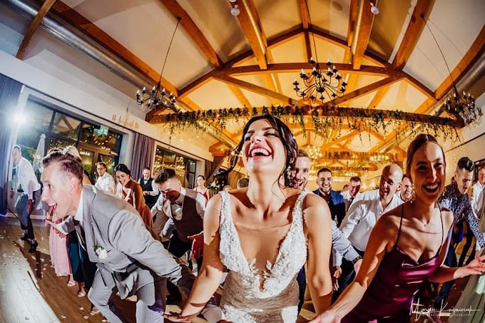
Śluby i wesela
Reportaż bez sztucznych póz, za to pełen emocji — od porannych przygotowań po ostatni taniec. Z Magdą łapiemy każdy ważny kadr.
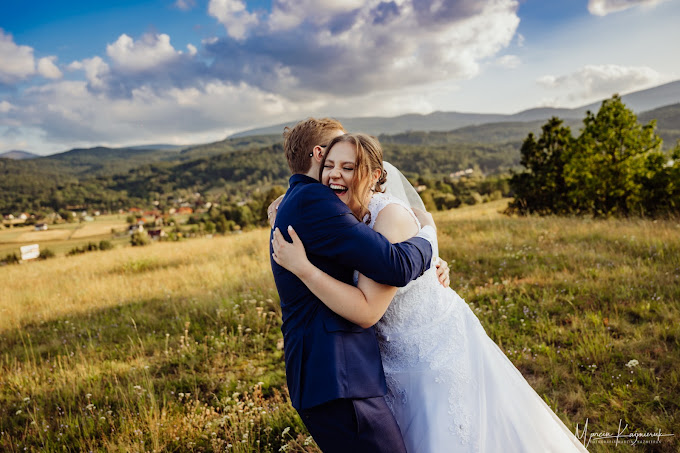
Fotografia ślubna i portretowa — Jelenia Góra · Karkonosze
Marcin Kaźmieruk — fotograf z Jeleniej Góry. Śluby, sesje i górskie kadry, w których naprawdę czuć emocje.
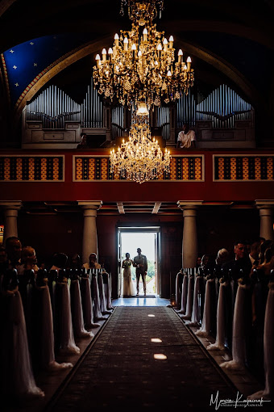
Za obiektywem
Fotografuję tam, gdzie dzieją się prawdziwe emocje — na ślubnym kobiercu, na górskim szlaku i na parkiecie. Nie ustawiam sztywnych póz. Wolę poczekać na ten jeden moment: spojrzenie, śmiech, łzę wzruszenia — i namalować go światłem.
Działam w Jeleniej Górze i całych Karkonoszach. Przy ślubach tworzę zgrany duet z Magdą, więc żaden ważny kadr nie umyka. A że robotę traktuję jak pasję, na sesji jest zwykle tyle samo zdjęć, co dobrej energii i śmiechu.
Marcin Kaźmieruk Fotograf · Jelenia Góra
Co fotografuję
Od najważniejszego dnia w życiu, przez talerz w restauracji, po świt na granicy Karkonoszy — każdy temat dostaje tę samą uwagę i światło.

Reportaż bez sztucznych póz, za to pełen emocji — od porannych przygotowań po ostatni taniec. Z Magdą łapiemy każdy ważny kadr.
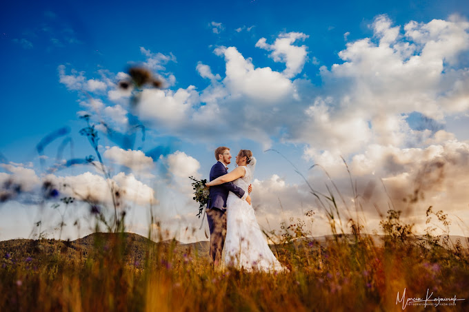
Łąka, las, zachód słońca nad doliną. Para, rodzina, portret — tam, gdzie czujesz się sobą.
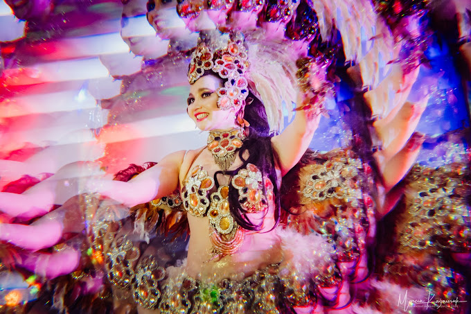
Salsa, samba, pokazy, akrobatyka. Zatrzymuję ruch, energię i światło reflektorów w jednym kadrze.
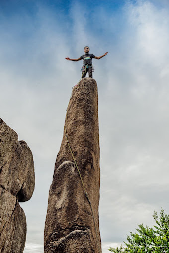
Szczyty, skały, mgły o brzasku. Niecodzienne kadry dla tych, którzy nie boją się odrobiny wspinaczki.
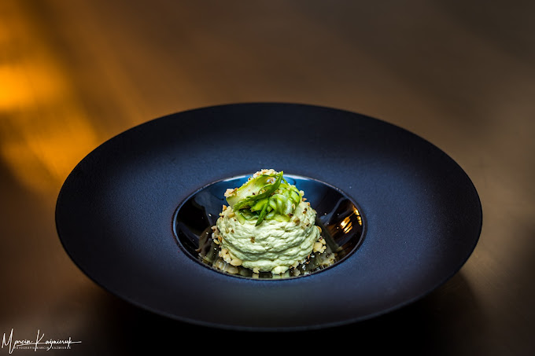
Dania, drinki i produkty, które wyglądają tak dobrze, że niemal czuć je przez ekran. Dla restauracji, barów i marek.
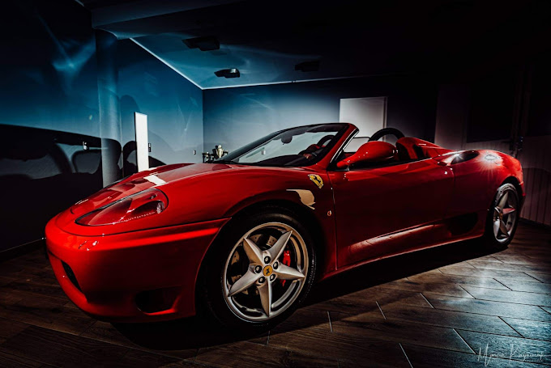
Auta, wnętrza, eventy. Mocne, kontrastowe kadry, które dobrze sprzedają — w studiu i w plenerze.
Wybrane kadry
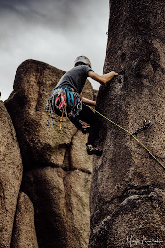
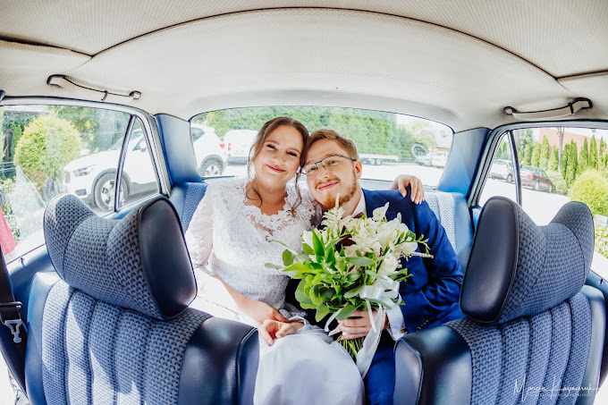
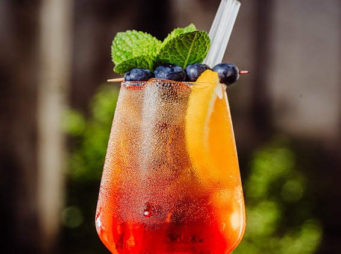
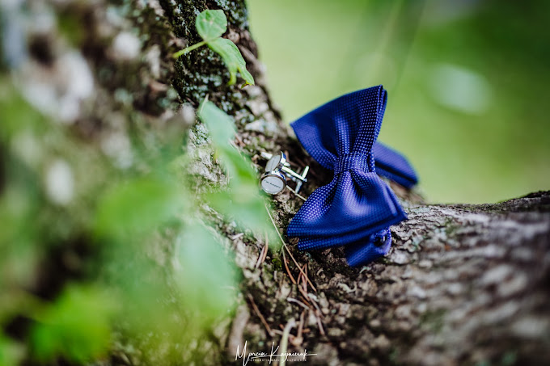
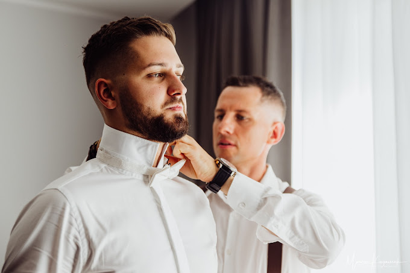
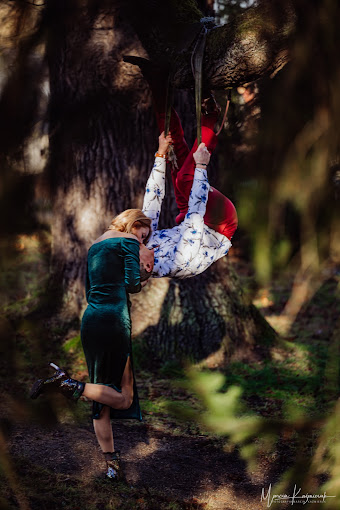
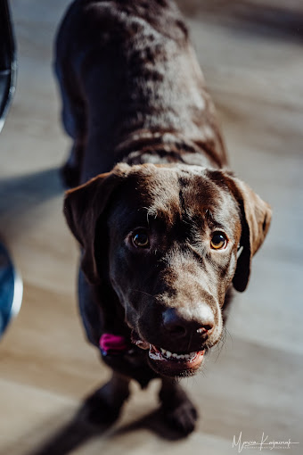
„Zdjęcia Marcina są fenomenalne — artystycznie malowane światłem.” — BT Sudecka Kraina
Nie ma skali, żeby ocenić Marcina! Jest absolutnie najlepszy w swoim fachu i z ręką na sercu mogę go polecić każdemu.
Sesje z Marcinem to nie tylko zdjęcia. To kadry, które ukazują duszę człowieka — nasycone emocjami, ukazujące to, co często skryte głęboko.
Fotograf, który poza pięknymi zdjęciami łapie emocje chwili! Wydawało mi się to niemożliwe, a Pan Marcin po prostu je chwyta i przepięknie uwiecznia.
Marcin z Magdaleną fotografowali nasz ślub. To, czego dokonaliście tego dnia, nie da się opisać słowami — zdjęcia pełne emocji, ciepła i pozytywnej energii.
Jestem zachwycona! Zdjęcia są przepiękne, pełne ciepła i humoru. Podczas sesji panowała swobodna, przyjazna atmosfera, dzięki czemu mogliśmy być po prostu sobą.
Profesjonalizm, kreatywność i świetna energia! Marcin potrafi uchwycić klimat i emocje w każdym kadrze. Gorąco polecam.
Zacznijmy
Najlepsze daty ślubne rezerwują się z dużym wyprzedzeniem. Napisz albo zadzwoń — opowiem o wolnych terminach i o tym, jak pracuję.